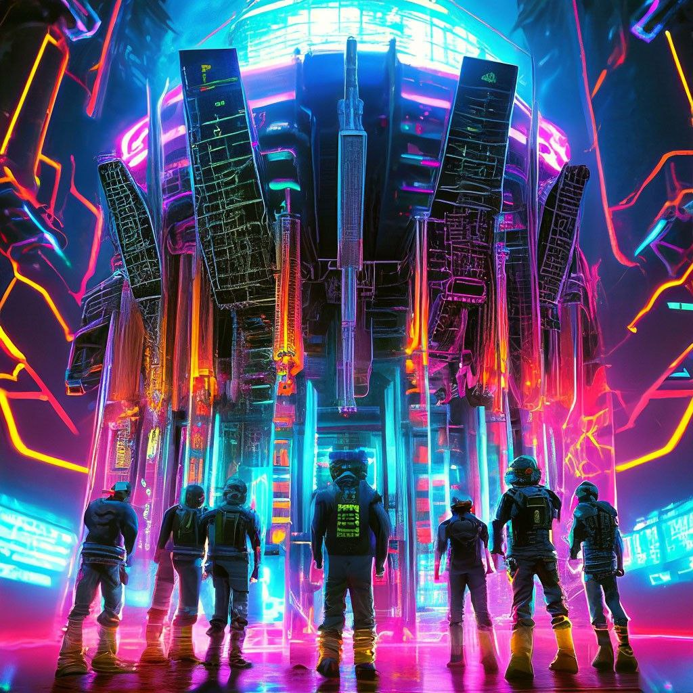
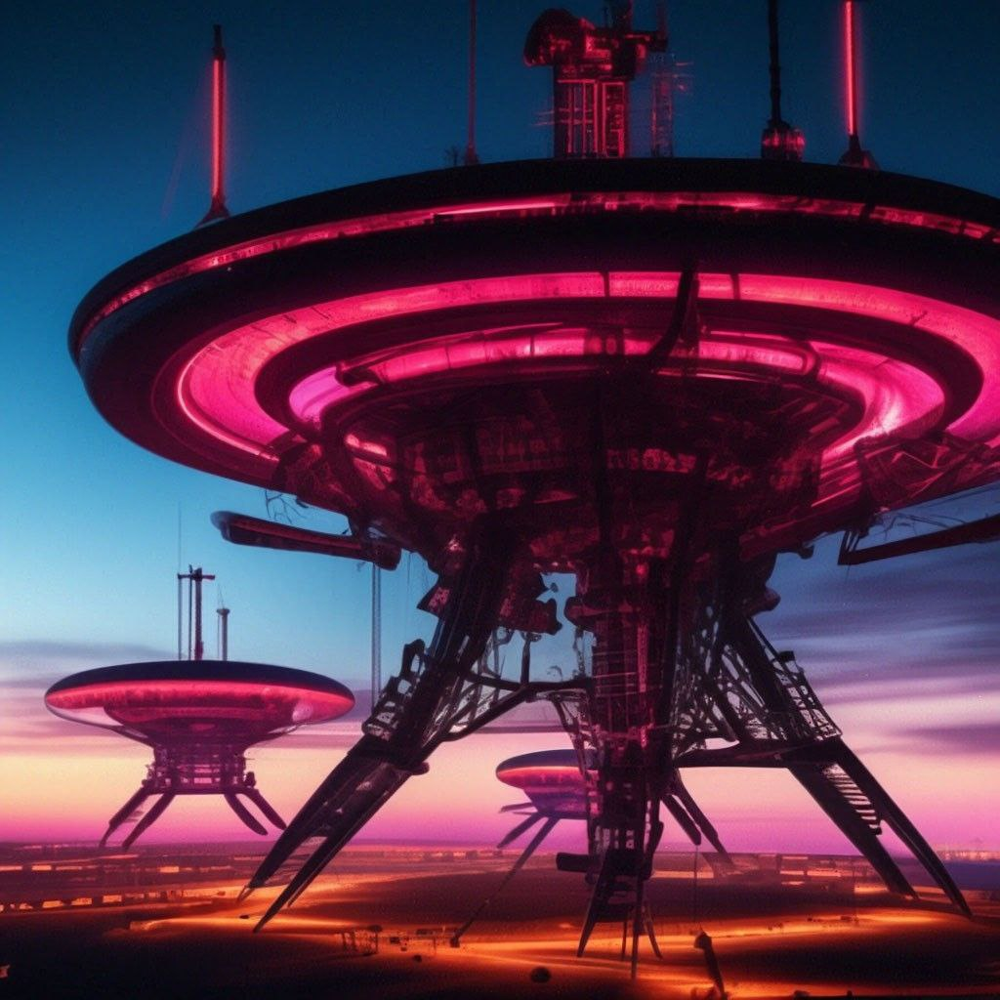

В 2190 году технологий и ресурсов хватало на то чтобы у каждого Users была своя Planet .. расселение по разным планетам подходило к концу .. но эти планеты изза большего взрыва не схлапывались как считали ученые а отдолялись друг от друга еще дальше и передовать сообщения становилось почти невозможным пока не обнаружили вблизи SDSS J0100+2802 - сверхмассивной черной дыры в центре вселенной мощный пульсар ( PSR FN-SPE-399) по его Гамма-всплескам (ГВ)мощности которого хватило для установки самого мощного аппарата передачи данных который добивал сигналом до всех планет и который проэктировали про отцы 29 долгих лет делая перерывы только на попивание кибер piva and ловля fishings. Также ходят слухи что после отладки этой мощнейшей конструкции с ними вошел в контакт сам MAIN-ADMIN..Так был создан теперь уже единственный во вселенной чат фанспейс который был доступен бля всех во вселенной

